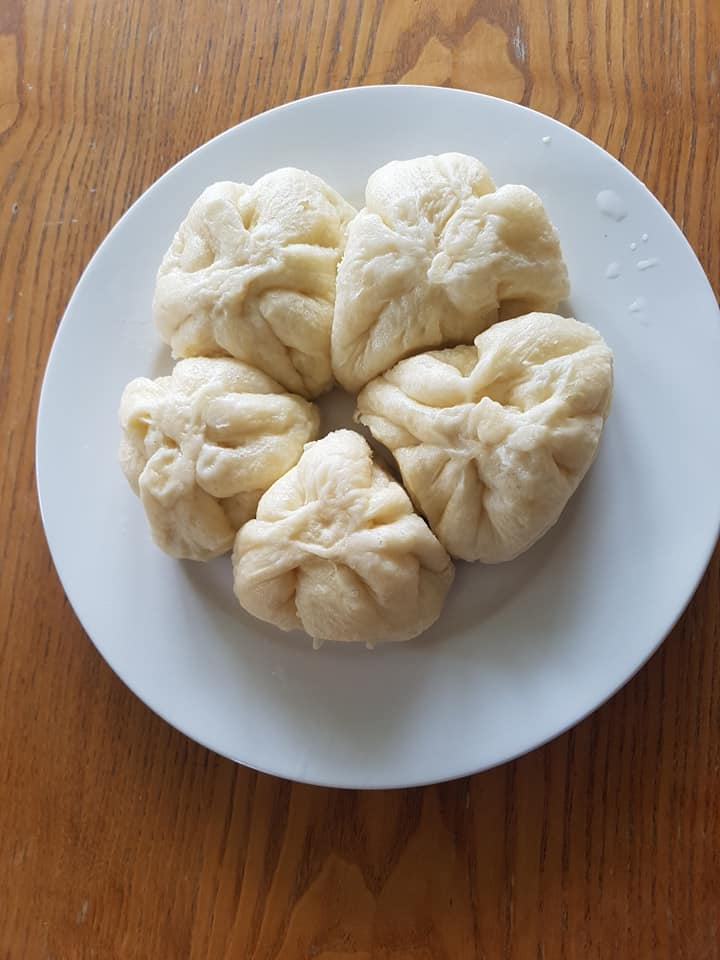

Steamed dumplings, savoury or sweet!

When you say dumplings, people will usually imagine Chinese or German cuisine, but it is Czech cuisine that truly shines here! We don’t have one, two, but at least three different types of sweet dumplings alone and many other savoury ones (filled or plain)!
My most favourite type of sweet fruit dumplings is made of a quark and they are really fiddly (but it is well worth it). The type that I will describe here is really simple and if you are familiar with Asian cuisine, you will quickly recognize it as a steam bun (Bánh Bao in Vietnamese).
Steamed dumplings
Ingredients
For one batch of about 10 dumplings, you will need:
- 250 g flour
- 150 ml milk
- 1 spoon of sugar
- 10-20 g of yeast
- 1 egg
- pinch of salt
Directions
- Mix warm milk with yeast and add a spoon of sugar and one spoon of flour. Mix well and leave rest. After 10 minutes, you will get an almost yoghurt-like substance. In Czech, this is called kvásek.
- Mix flour with salt (you can sieve the flour to make it airier). Add proofed yeast, one egg and mix.
- Work the dough in a bowl with a wooden spoon until the dough is smooth and not sticky. Form a ball from flour and leave it proof for around an hour in a warm place. Apply some flour around the dough so that you can safely get it from the bowl.
- After the dough is proofed, work it slightly again to press the air out of it.
- Divide dough into little balls of around 45 grams. Use a rolling pin and roll each ball into a flat circle about 1/2 cm thick. Fill with your favourite filling, close and leave them rest for a while (20 minutes).
- Alternatively, if you have space, you can roll the big ball of dough into a big square and cut into smaller squares.
- Put into steamer and steam for about 20 minutes. You can apply some butter (if sweet) or oil (if savoury, or you are cheapo like me) to make sure that the dumplings won’t stick to a steamer or each other.
Good sweet fillings are apricots, plums, strawberries, blueberries and peaches. Sprinkle with (a good amount) of icing sugar and top with melted butter. You can also make breadcrumbs sprinkle: fry breadcrumbs with sugar and butter.
You can also use your favourite savoury filling. Just note that it should be on the drier side so that it won’t drench the dough.